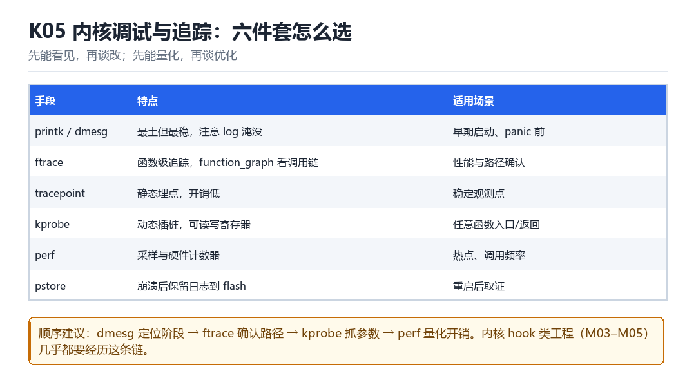

K05
Linux 内核调试与追踪
printk、ftrace、tracepoint、kprobe、perf、pstore
先能看见，再谈改；先能量化，再谈优化。

5.1 六件套怎么选
| 手段 | 特点 | 适用 |
|---|---|---|
| printk / dmesg | 最土但最稳 | 早期启动、panic 前 |
| ftrace | 函数级追踪，function_graph 看调用链 | 路径确认 |
| tracepoint | 静态埋点，开销低 | 稳定观测点 |
| kprobe | 动态插桩，可读写寄存器 | 任意函数入口/返回 |
| perf | 采样与硬件计数器 | 热点与频率 |
| pstore | 崩溃后保留日志到 flash | 重启后取证 |
5.2 一条实用的排查顺序
dmesg先定位“在哪个阶段出的问题”。ftrace确认调用路径（function_graph看谁调了谁）。kprobe抓参数与返回值，确认数值。perf量化开销，判断能不能长期开。
ftrace 与 kprobe 的最小用法
cd /sys/kernel/tracing
echo function_graph > current_tracer
echo 'do_sys_open' > set_graph_function
cat trace
echo 'p:myopen do_sys_open' >> kprobe_events
echo 1 > events/kprobes/myopen/enable5.3 本章自测
- ftrace 与 kprobe 的区别是什么？
- 为什么 pstore 对崩溃取证特别有用？
- perf 采样能告诉你什么、不能告诉你什么？
- 如果 dmesg 里什么都看不到，你的下一步是什么？
5.4 深入：ftrace 的 function_graph 怎么读
function_graph 的输出是一棵树：缩进表示调用深度，| 表示还在同一层，每行末尾的 { } 或 ; 表示这是一个调用点。看懂缩进，就看懂了调用链。
一段典型的 function_graph 输出
0) | do_sys_open() {
0) | getname_flags() {
0) 0.512 us | kmem_cache_alloc();
0) 2.104 us | }
0) | do_filp_open() {
0) 12.338 us | }
0) 18.772 us | }5.5 实战：定位“谁在频繁调用某个函数”
- 打开
functiontracer 或function_graph。 - 设置
set_ftrace_filter只保留目标函数（减少开销）。 - 跑一段时间，读
trace。 - 看调用者（function_graph 的父节点）与调用频率。
5.6 原理推演：为什么“静态埋点”比“动态插桩”便宜
tracepoint 是编译期就埋好的：调用点直接是一个函数调用或跳转，没有“替换指令”“处理断点”的开销。而 kprobe 需要在运行时替换指令、在异常里执行回调，成本高一个数量级。
| 方式 | 开销 | 灵活性 |
|---|---|---|
| tracepoint | 低 | 只能用已有埋点 |
| kprobe | 中高 | 任意位置 |
| ftrace function | 中 | 函数级 |
| perf 采样 | 低 | 统计而非明细 |
所以“能先用 tracepoint 就用 tracepoint”。只有当已有埋点不够用时，才上 kprobe。
5.7 数据细节：一次 kprobe 的执行路径
简化路径
1. 命中被替换的指令（BRK 或跳转）
2. 进入 kprobe 异常处理
3. 保存现场（pt_regs）
4. 调用 pre_handler
5. 单步执行原指令（临时恢复）
6. 调用 post_handler
7. 恢复并继续注意第 5 步：kprobe 必须“单步执行原指令”才能继续。所以每次命中都有一次单步开销——这就是它比 tracepoint 贵的原因。
5.8 深入：trace 文件的读取姿势
trace 文件是一个环形缓冲区的快照。读它有两个坑：读的时候会阻塞写入、读太快会丢数据。
| 读取方式 | 优点 | 缺点 |
|---|---|---|
| cat trace | 简单 | 会暂停记录 |
| trace_pipe | 流式，不阻塞 | 只能读一次 |
| per_cpu/cpuN/trace | 分核读 | 要自己合并 |
需要“持续观测”时用 trace_pipe；需要“事后分析”时用 trace。混用会丢数据。
5.9 深入：为什么 filter 能大幅降低开销
ftrace 的过滤是在“记录之前”做的：不匹配的调用根本不进入缓冲区。所以“只记录我关心的那一个函数”与“记录全部”在开销上差几个数量级。
设置过滤
echo 'do_sys_open' > set_ftrace_filter
echo 'vfs_*' >> set_ftrace_filter # 支持通配
echo function > current_tracer5.10 实战：定位“谁在频繁打开文件”
- 开
function_graph，过滤do_sys_open。 - 跑一段时间，读 trace。
- 看调用的父节点（谁调的）与频率。
- 如果需要进程信息，配合
set_ftrace_pid。